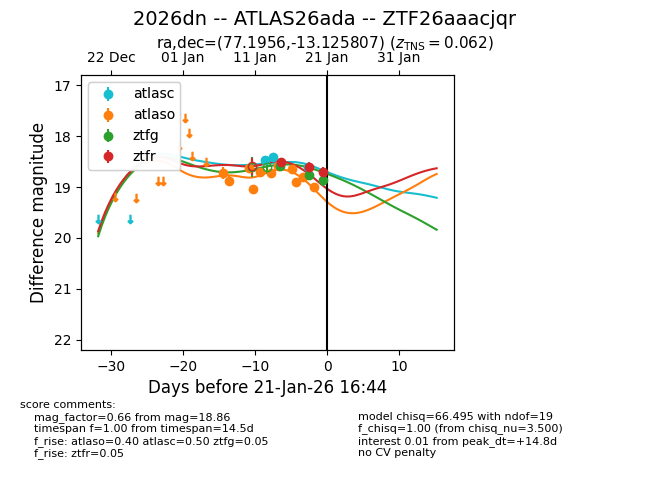
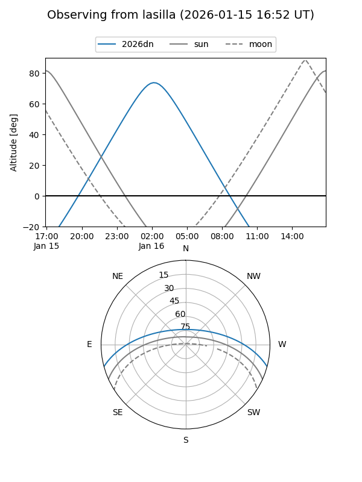
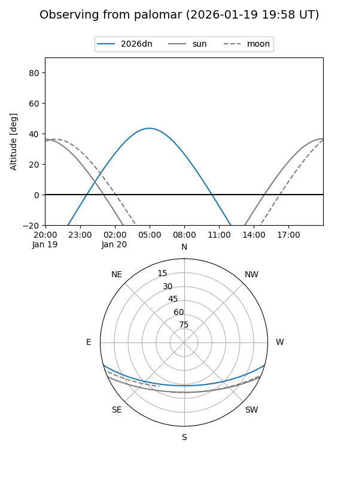
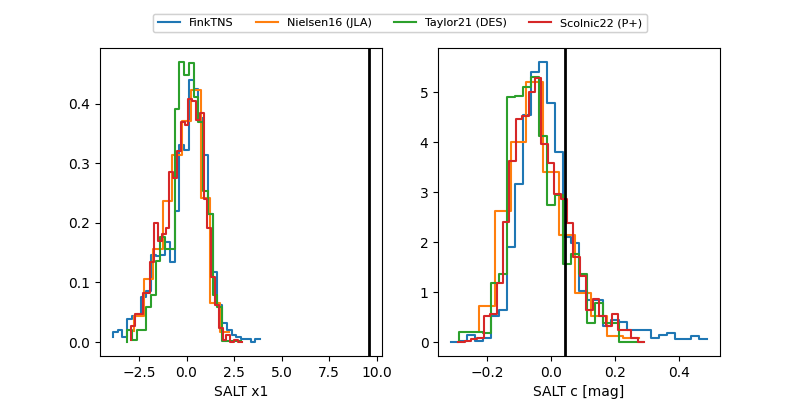

2026dn
Target 2026dn at 2026-01-20 07:00
Aliases and brokers:
FINK: link
Lasair: link
ALeRCE: link
TNS: link
YSE: link
alt names
ZTF26aaacjqr (ztf,fink_ztf)
2026dn (tns,yse)
ATLAS26ada (atlas)
Coordinates:
equatorial (ra, dec) = 77.1956,-13.12581
equatorial (HMS+DMS) = 05:08:46.95,-13:07:32.91
galactic (l, b) = (213.5706,-28.61517)
Flags:
confirmed ia
likely cv
Photometry:
last atlasc=18.40, atlaso=18.76, ztfg=18.76, ztfr=18.60
2 atlasc, 10 atlaso, 2 ztfg, 2 ztfr detections
Lightcurve

Visibility


Additional plots
